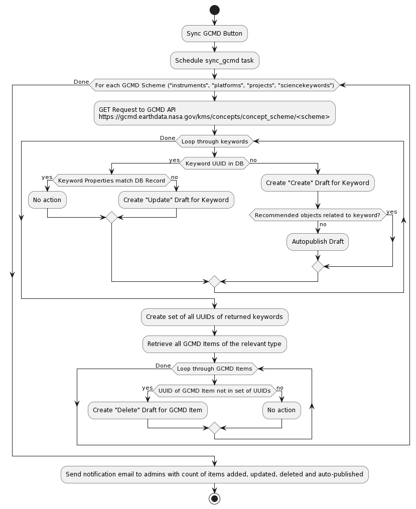

GCMD Sync
The GCMD Sync is a method of querying metadata from the Global Change Master Directory to synchronize the CASEI’s local database with the current state of the Keyword Management Service (KMS) API.
This is a comprehensive approach to ensure scientific keywords and terms are consistant between our databases and GCMD.
The GCMD sync is an asynchronous task that fetches alist of keywords for four Concept Schemes of interest (instruments, platforms, projects, sciencekeywords). Each keyword’s current state is compared to the state in the DB then local records are created, updated or deleted as needed (in draft form). Finally, a list of Affected Records is generated in the MI for each modified keyword then is reviewed by staff. If a keyword has no affected records, its draft is automatically published.
It ensures tcontrolled vocabulary of GCMD keywords are incorporated within the CASEI metadata. A semi-automated syncing feature ensures consistency in CASEI to the periodic updates to the GCMD keywords. When new versions of the GCMD vocabulary are issued, CASEI alerts curators by providing a list of any changes. Changed keywords may be new additions, deletions, or modifications of existing keywords. Based on the database content, CASEI automatically generates a list of metadata records associated with any modified keywords, any deleted keywords, and provides suggestions for records that likely need to be associated with any newly added keywords. Curators then review each updated keyword and any impacts to the associated metadata in CASEI.
Diagram Breakdown
First users click on the “Sync GCMD Button” thus generating a scheduled sync_gcmd task asking for each GCMD scheme.
Next a GET request is ran to retreive metadata from the GCMD KMS API.
<https://gcmd.earthdata.nasa.gov/kms/concepts/concept_scheme/<scheme>>
Next a loop runs through each keyword and checks if it contains a UUID in the database. If it does then it checks if the Keyword Properties match the database record. If it matches then no actions happens and it continues the loop until it is DONE. If it does not match the database record then it creates an “Update” Draft for that keyword.
If they do not contain a UUID then users create a “Create” draft for that keyword. Then it checks if there are recommended objects realted to the keyword. If yes it moves on with the process and if not it autopublishes the draft.
The GCMD Sync process continues to create a set of all UUIDs of returned keywords. Then it retrieves all GCMD items that are of the relevant type.
It runs another loops through the retrieved GCMD items and chekcs if the UUID of the GCMD item is not in set of UUIDs. If it is true then a “Delete” draft is created for the GCMD item. If it is in set of UUIDs then no action is needed and it sends a notification email to the admin.
The email contains a count of items added, updated, deleted, and auto-published.
